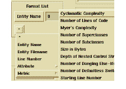
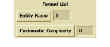
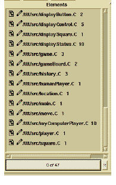

To display metrics with an entity in a column
1 Click the Filter List button at the bottom of a column in your Browser.
2 Click Metric from the second option menu in the Format List section.
The option menu expands to show all available metrics queries.

3 Select the metric you want.
It appears as the option menu’s title.

4 Enter a numeric value for how far, in characters, you want the metric to appear from any previous display options (Entity Name in the example).
Leave the default or choose a value to put some room between the entity name and the metric.
5 Click OK.
The metric appears in the Results column (formally, an RTL (Run Time List)).

You can repeat this procedure in any column that has a Filter List button.